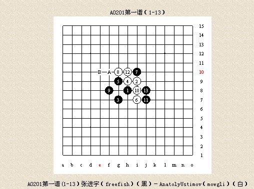
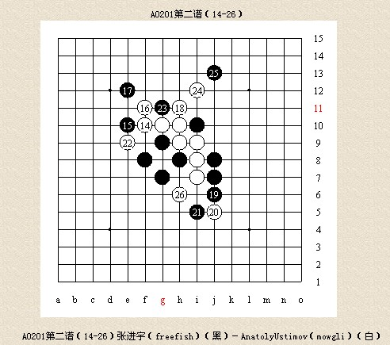
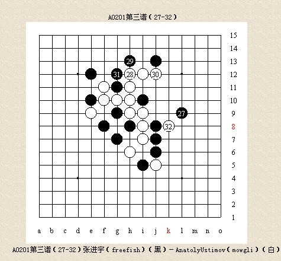

2008年Email世界锦标赛冠军张进宇 回顾
#1 2008年Email世界锦标赛冠军张进宇 回顾 作者：失落刀 发表时间：2009-1-20 16:45:13
#2 Re:2008年Email世界锦标赛冠军张进宇 回顾 作者：江南新绿 发表时间：2009-1-20 23:51:10
首先祝贺张进宇先生获得冠军。
email比赛是网络世界的产物。五子棋更是凭借着计算机的飞速发展而得到壮大。目前上网人数增长最快的国家是中国。中国自然是五子棋人数第一大国。有了计算机的普及，逐步挖掘出了全国乃至全球还有其他人会下五子棋。
现在的五子棋游戏平台很多，是否能够吸引到一流选手参赛呢？其次能否吸引新的棋手的加入，注入新鲜血液呢？都是值得研究的。
email比赛赛制僵化。首先需要排位赛从低组打起，最后才能达到a组。所以email比赛不光需要算力强。耐力也必须足够的好。目前要达到email的程度并不需要从小开始，由于你可以把优势开局当平衡下。所以只有掌握一下平衡开局就行了。这样的训练时间能大幅度的压缩。
去年的email比赛我没有去看。但从以往的比赛看来，即使在a组也存在很简单的昏招。只能说明即使比赛时间延长一些，人的注意力还是无法任意延长。
搜索email的对局，并不能直接从对局中看出必胜的招法，甚至一些强开局中的某些变例的胜率都很难说。但从胜率平衡角度来分析，可下的开局只有瑞星。下瑞星是理性的选择。但从a组盘盘瑞星来看，似乎很单调。
明年我是不是还想继续在email里比赛的念头会时刻困扰任何一位参赛选手。这样的情况下，成绩的上下会因心理的浮动而上下。目前email比赛逐渐淡出研究界的视线。新兴变化逐渐成为主流。
似乎各个国家目前都在尝试使用他们自己喜欢的规则，不把国际连珠联盟的规定当回事，只能更加强调一件事情，五子棋目前的发展还是网络的推动，而不是国际连珠联盟的努力。是否存在新的推动力，今后会有什么发展，我们拭目以待。
#11 Re:2008年Email世界锦标赛冠军张进宇 回顾 作者：上海PL囡囡 发表时间：2009-1-21 20:05:57
拿得Email冠军固然值得祝贺。但拿Email冠军这战绩能说明什么？很多网络研究棋手淘汰的变化Email还频频出现，只是一些人不了解而已。
#12 Re:2008年Email世界锦标赛冠军张进宇 回顾 作者：行云流水 发表时间：2009-1-21 22:44:40
五子棋不应当仅仅停留在“术”的层面，更应该提高到“艺”的高度，这样才会被更多人认同和接受。
任何比赛都有其产生的背景和存在的理由。不管是九段棋手，还是世界第一人，就算面对初学者的比赛，也一样会表示出足够的尊敬，因为那不仅是对人的尊敬，更是对棋的尊敬。
的确，就研究深度看，现在的国际通讯赛或许对某些研究型棋手来说已经显得落伍了，甚至是老土了。但是，如果有一个人能长年如一日的参加一项比赛，并且一直名列前茅，我想是应该值得我们尊敬和祝贺的。
#13 Re:2008年Email世界锦标赛冠军张进宇 回顾 作者：oddgod 发表时间：2009-1-21 23:49:26
恭喜张进宇老师夺冠~~#14 Re:2008年Email世界锦标赛冠军张进宇 回顾 作者：梦婷 发表时间：2009-1-22 1:40:16
恭喜张进宇老师夺冠~~ 为中国人争光!~~#15 Re:2008年Email世界锦标赛冠军张进宇 回顾 作者：大元 发表时间：2009-1-22 16:25:11
长年如一日跟老外比谁软件多，软件用的时间多，纯属无聊。五子棋本来就是随便玩玩的娱乐棋种，一个事业成功且业余生活又丰富多彩的人不会老是为了一步棋用软件拆解几个小时，有这个时间精力还不如在能创造经济价值的科研项目上搞出点成果来。
#16 Re:2008年Email世界锦标赛冠军张进宇 回顾 作者：隐藏菜系 发表时间：2009-1-22 18:21:17
图片没发成功。。。 请版主帮忙把这个删了吧。。。。
请版主帮忙把这个删了吧。。。。
个人认为张老师的这盘斜月讲的很准确很中肯，所以想继续转过来让更多的人也看到，也不晓得我有没有这个权限。。。
一般来说，张老师这样的大学教授在学校不仅要承担教学任务，更多的可能是科研任务以及其他方面的任务，能在百忙之中抽出时间写下这些东西，真的
令晚辈非常钦佩，在此致敬。
#17 Re:2008年Email世界锦标赛冠军张进宇 回顾 作者：隐藏菜系 发表时间：2009-1-22 18:39:31
观点不同，可以各抒己见嘛，现在本就是一个百家争鸣的时代。倒没必要将锋芒直指某个人。透过张老师这篇尚未完成的“告白”能看到很多背后的东西，并且值得我学习，就个人来讲，足矣。当然文中也提出很多观点对我们有所启发，值得我们思考和讨论，难道不应感谢他么？不想说太多，只是觉得有时候我们是不是有些浮躁了。#18 Re:2008年Email世界锦标赛冠军张进宇 回顾 作者：失落刀 发表时间：2009-1-22 19:12:41
祝贺张进宇八段获得2008年Email世界锦标赛冠军！
3.棋局介绍
3.1张进宇(freefish)--AnatolyUstimov(mowgli)
A0201第一谱（1-13）

A0201第一谱(1-13）张进宇（freefish）（黑）－AnatolyUstimov（mowgli）（白）
斜月开局，至13是非常常见的变化，虽然普遍认为黑棋优势非常大，但是能否必胜还存有疑问。这时，白14常见有A和B两点下法，14－G11是古老的下法，上海的李洪斌过去使用比较多。但目前实战几乎绝迹。在Email中更加看不到，其他14的下法已经被穷尽为黑棋必胜。据说14－A点目前已经研究出必胜，但是我所知道的棋谱库中的最强变化只是研究到一个黑优的局面，并没有看到彻底的解决方案。而14－B则很早被认为如果双方走出最强变化则黑棋无法取胜，白棋有妙防，但是黑棋很安全。由于斜月具有这种特点，很多人在第5手棋采用其他的两打点。在今年的比赛中，mowgli和leoranger对我都采用了斜月开局，也许是他们厌烦了大量的瑞星开局。其中mowgli似乎对斜月深有研究，他的不少开局都使用斜月。但是，在Email比赛中使用这种强开局需要很大勇气。因为对手有很长的时间进行研究，一方面，虽然没有必胜，但是接近必胜的开局会有多种很强的进攻，并非每种进攻都在自己的研究中；另一方面，经验丰富的对手在确定无法必胜的时候，则会在很早的时候改变进攻策略，做和棋的考虑，这样白棋在接受黑棋大半盘强攻的“蹂躏”下最终只能接受和棋，一般人难以接受。但是，用强开局的机会在于对手可能会投入大量时间进行思考，始终在必胜搜索中苦苦挣扎，缺乏经验的棋手可能错过最佳的和棋时机，从而导致局面不可收拾。利用这种策略，mowgli在今年的大多数斜月开局在中盘基本上取得了局面的优势。在和我的比赛中，mowgli选择了14－A的下法，而leoranger则选择了14－B的下法。通过这两盘棋我对于斜月如谱的变化有了比较充分的研究。
A0201第二谱（14-26）

A0201第二谱（14-26）张进宇（freefish）（黑）－AnatolyUstimov（mowgli）（白）
Mowgli选择14－f10的下法。而实战15则是被认定此时唯一的必胜的手段。这个变化最早是俄罗斯提出来的，但是由于没有深入研究，一直简单认为是斜月黑优的局面之一，而15－f11则是非常流行的下法，黑棋有很强的进攻。但是，某些中国棋手对这个局面有了比较深入的研究，发现如谱黑15有着极强的后续手段。我有幸看到这个棋谱的研究，虽然对后续的变化不是太相信，但是感觉这是一个可行的下法。既然对手敢于开斜月，我自然也不能以平常的手段应付。下出黑15之后，对方在之后的每一步都陷入了长考。本来我的时间比他多80多天，到后来他的用时很快超过了我。貌似没有准备这个变化。这其实就反映了开强开局的一个不利，就是当对方走出意外强防的时候，需要重新研究。
16和18被认为是这个局面的最强防守，而19，21是早已研究好的最强攻击。23以后，局面变得相当复杂：白棋暂时获得先手，但是上方无法取胜；下方黑棋是极强的棋型，但似乎也不是简单取胜的那种。白棋的策略是争取通过上方攻击获得防守下面黑棋的机会，但是黑棋也需要通过白棋的进攻获得新的进攻机会。白棋24和26是此时最强的防守，黑棋27如果g5，白h4，没有胜。看来局面变得有点平淡了。但是，这个局面是黑棋在走15的时候就预见到了的局面，早已做了充分的准备。从15开始，每一步都蕴涵这很深很复杂的变化，在实战中，只要一方没有充分研究，走错一步就会招致致命的打击。所以，对于email比赛的棋谱，不能简单在实战中采用，必须搞清其中的变化，否则贸然使用对方走出变招之后就不会下了。
A0201第三谱（27-32）

A0201第三谱（27-32）张进宇（freefish）（黑）－AnatolyUstimov（mowgli）（白）
27是此时最强最妙的下法，虽然看起来是那么普通自然，好像防守的意味更多。事实上27的选择很多，必须把所有变化都参透才能确信这手棋的强大。白棋在防守27之前是否做28－30交换是一个非常难的选择。能正确走出防守的前提是必须搞清楚黑棋以下所有的攻击手段，以及白棋相应的防守对策。即使在email这种长限时的比赛中，搞清楚其中的变化都是很难的。对于局面研究是否深入的一个判断是，如果无法发现对方的最强进攻，你就会觉得每一种变化似乎都是可下的，但事实上，在每一种你认为可行的变化中只有有限的几种才真正可行。
#19 Re:2008年Email世界锦标赛冠军张进宇 回顾 作者：手术 发表时间：2009-1-24 12:09:54
祝贺freefish夺冠。
同时，也祝贺我的好朋友mowgli获得亚军。04年到现在，mowgli的进步太大了。只是现在都没联系了，惭愧！
#20 Re:2008年Email世界锦标赛冠军张进宇 回顾 作者：米兰 发表时间：2009-1-24 15:08:20
支持张进宇老，#21 Re:2008年Email世界锦标赛冠军张进宇 回顾 作者：剑荡天涯 发表时间：2009-1-24 18:37:11
请说"都什么年代了还拿EMAIL赛这种国内高手都不屑于参加的低水平慢棋赛当论据，张进宇真的老了"此话的也去参加EMAIL赛拿个冠军回来看看！？
别人拿冠军是值得祝贺的，请不要总是质疑五子棋研究结论的先进与落后。规则在改变，没准那些所谓研究高手呕心沥血研究出的某规则下的五子棋开局结论明天就会成为过眼云烟呢！
五子棋作为一个棋种，研究固然占一定比例，但是计算才是根本，不要认为在比赛里靠埋头搞出来的研究赢了对手就认为实力比对手强悍，相信任何一个五子棋届的朋友都深知这个道理。
张进宇虽然这几年已逐渐淡出五子棋界，可是他头些年参加现实比赛的成绩也是众所周知的，没人会怀疑他的实力。相反，发表“张进宇真的老了”言论的人可以说一下姓甚名谁吗，让大家看一下你的棋力和人格可以吗？
［ 有志青年 于 2009-1-27 9:22:56 时奖励此帖[金币加 20 威望加1］
#22 Re:Re:2008年Email世界锦标赛冠军张进宇 回顾 作者：越狱行辕 发表时间：2009-1-25 15:41:31
引用：疯狂鄙视你。不服你自己拿一个 ，别说别人
原文由 Type 发表于 2009-1-21 8:59:22 :
都什么年代了还拿EMAIL赛这种国内高手都不屑于参加的低水平慢棋赛当论据，张进宇真的老了
#23 Re:2008年Email世界锦标赛冠军张进宇 回顾 作者：手术 发表时间：2009-1-27 0:18:57
请楼上两位消消气，原谅他的无知吧。。。哈~~
#24 Re:2008年Email世界锦标赛冠军张进宇 回顾 作者：岳麓小棋皇 发表时间：2009-1-27 16:40:12
 同意楼上的,支持并祝贺张老师,原谅无知者~
同意楼上的,支持并祝贺张老师,原谅无知者~
#25 Re:Re:2008年Email世界锦标赛冠军张进宇 回顾 作者：茗弈小刀 发表时间：2009-1-28 17:32:08
支持隐藏菜系的观点
#26 Re:2008年Email世界锦标赛冠军张进宇 回顾 作者：gerbo 发表时间：2009-2-3 6:05:12
 楼上的意思是说:坏人发表的正确评论咯 ? 这里先撇开比赛的性质不说,能持久的坚持就是一种精神,让我们祝贺张老师吧,不容易啊~~~哈哈~~~
楼上的意思是说:坏人发表的正确评论咯 ? 这里先撇开比赛的性质不说,能持久的坚持就是一种精神,让我们祝贺张老师吧,不容易啊~~~哈哈~~~
#27 Re:2008年Email世界锦标赛冠军张进宇 回顾 作者：就是爱玩 发表时间：2009-3-5 17:55:44
张进宇老师拿到通讯赛的冠军，居然有人说三道四？
怎么想的啊？